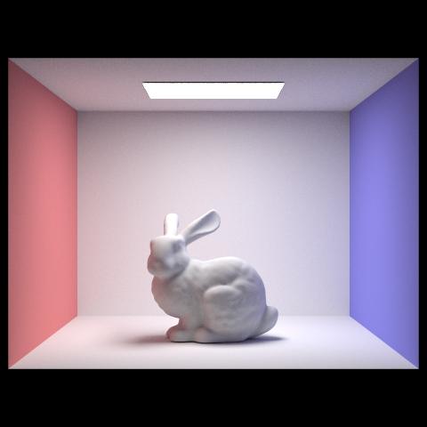

A project that uses computer vision and a PyTorch neural network to recognize a user's pose.
Used OpenCV and MediaPipe along with a script to collect self data, then cleaned and trained a PyTorch neural network on the data in order to learn to recognize user poses which is read as
input data from the webcam that is passed into the neural network which outputs a softmax guess on what pose the user is doing and displays it on the screen.
A collection of projects for UC Berkeley's computer graphics course.
Course description is as follows: The course provides a broad introduction to the fundamentals of computer graphics. The main areas covered are modeling, rendering, animation and imaging. Topics include 2D and 3D transformations, drawing to raster displays, sampling, texturing, antialiasing, geometric modeling, ray tracing and global illumination, animation, cameras, image processing and computational imaging. There will be an emphasis on mathematical and geometric aspects of graphics, and the ability to write complete 3D graphics programs.
CS184 Projects